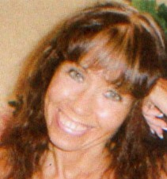
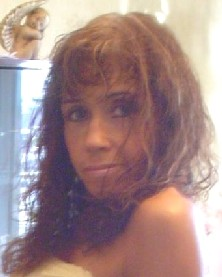

Tiempos
de siembra
Tiempos
de siembra
Autor: Silvana María Bixio
|
¡Nuevo! El amor es de origen divino
El amor es de origen divino
Todos queremos ser amados con amor incondicional, eterno, un amor que va más allá de la belleza, la inteligencia, y cualquier otra cualidad superficial.
Queremos ser amados simplemente porque "somos". Todos tenemos una tendencia natural, innata a compartir nuestro amor con otros. Esta preocupación por el amor
surge en realidad porque somos seres eternos, amorosos, cuyas almas están repletas de conocimiento y dicha.
Aunque en esta encarnación física estamos temporalmente cubiertos por energía material, nuestra naturaleza es divina, y estamos siempre en busca del amor venturoso
del reino espiritual donde yace nuestra verdadera realización.
Pero siempre algo parece salir mal. A pesar de nuestra constante búsqueda, generalmente sentimos desilusión, encontrándonos con que nuestra experiencia de amor es
temporaria. Aunque podremos haber intentado y fracasado en una variedad de relaciones, persistimos en creer que la persona adecuada está allí en alguna parte.
Por algún motivo misterioso, parecería que nunca estamos en el lugar apropiado, en el momento apropiado.
Muchísimas personas hoy en el mundo jamás se han sentido verdaderamente amadas. No tienen idea qué es realmente el amor; sin embargo, el amor es un anhelo
muy grande. En realidad, en las relaciones cotidianas, el término amor ha adquirido un significado demasiado vago y hasta podría indicar algo muy distinto,
como control o necesidad. Por ejemplo, la noción de amor es demasiado a menudo reducida a un mero intercambio físico o a un proceso de intentar obtener
gratificación de otro. Esto no es amor.
El problema surge porque buscamos respuestas en los lugares inadecuados. Hemos olvidado la dimensión espiritual de la vida. Una sociedad sin un núcleo
espiritual carece del "adhesivo cósmico" para hacer que todo funcione. El amor es este adhesivo cósmico que nos liga el uno al otro mientras aprendemos
a conocernos y relacionarnos el uno con el otro y, finalmente, a relacionarnos, a ligarnos a la Personalidad Divina de Dios.
Parece que hoy olvidamos esto. Pero en el fondo, aunque la experiencia del amor con frecuencia nos elude, sabemos que el amor es nuestro derecho natural.
Es como si alguien sostuviera algo deliciosamente tentador delante nuestro, apenas fuera de nuestro alcance. Lo deseamos, sabemos que está disponible, pero
no logramos amarrarlo debidamente. Entonces sustituimos por otra cosa, esperando encontrar la felicidad tal vez en la riqueza, el prestigio o el poder.
La mayoría de nosotros considera que el amor es un sentimiento que decae y crece según las circunstancias. Pero el amor genuino no está vinculado a lo que
sentimos, no depende de algunas condiciones externas. El verdadero amor es divino, y no puede persistir separado del origen, que es Dios.
Algunos aportes anteriores
 PRIMAVERA
PRIMAVERA
Todos aspiramos a grandes cosas en nuestros sueños,
Pero la mayoría de nosotros no creemos en Los resultados deseados.
No tenemos suficiente dinero, amor, éxito ni alegría en la vida.
Por qué? Qué nos lo impide?
|
 |
 Tu Luz Interior
Tu Luz Interior
Cualquier momento del año induce a realizar un balance.
No caigas en la trampa. Tus acciones no
se pueden dimensionar. Sus efectos van más allá de lo que
puedas suponer. Son ondas que se expanden en infinitas
direcciones. Diste todo lo que estuvo a TU alcance.
ayudaste a co-crear un mundo más humano. Te esforzaste,
sin importar el cansancio, por dar siempre otro paso en
dirección a la luz. Eso es entrega. Eso es constancia. Eso
Es amor. Eso es cumplir con TU misión vida.
Brindo por TUCoraje.
Puede que tus acciones no se traduzcan en dinero, pero eso
no significa que no tengan valor. Animar a que otros se
pongan de pie, abran sus corazones, recuperen su conexión
interior y sientan, es una tarea invalorable, que requiere
de un espíritu aguerrido dispuesto a iluminar con fervor.
El balance es impulsado por la mente social. Pretende que
aquellos que se animaron a Ser, retornen a Las viejas
estructuras, anulando toda posibilidad de vuelo, a cambio
de comodidad y sentido de pertenencia.
Sé que a esta altura del camino ya no desandarás tus pasos, de todos
modos necesitaba decírtelo. Muchos intentarán hacerte
creer que desperdicias TU tiempo, y que lo que haces carece
de sentido. Es parte de las pruebas.
Es justo y necesario que reconozca TU tarea. Si cuando
salgo a la calle encuentro miradas esperanzadas y rostros
alegres, es gracias a personas compasivas como tú, que
alientan a trascender Las limitaciones y no dudan en
enfrentar la adversidad, para activar Los cambios que nos
conduzcan hacia un futuro resplandeciente.
Digan lo que digan, TU alma sabe que vas por el camino
apropiado. No dejes que te confundan. Sólo faltan algunos
pasos. Gracias por seguir vibrando de una manera tan
humana. Te puedo sentir. Es un privilegio saber que
marchamos juntos. No importa dónde te encuentres, a la
hora de Los festejos buscaré la estrella más luminosa y
diré sonriendo, con todo el corazón:
brindo por TUCoraje.
TU luz interior
ALGO DE LO QUE DEBEMOS SER
Bastante firmes como para soportar la crítica sin
desalentarnos.
Bastante generosos como para compartir nuestros placeres.
Bastante valientes como para hacer lo bueno sin temer la censura y el ridículo.
Bastante veraces como para cumplir con nuestra palabra.
Bastante corteses como para nunca decir una palabra dura
a nadie.
Bastante honorables como para hacer a otros como quisiéramos
que se nos hiciese.
Bastante sabios como para ver Las cualidades valiosas de nuestros asociados.
Bastante urbanos como para no juzgar a la gente por su traje.
Bastante leales como para ser fieles a un amigo a pesar de sus reveses de fortuna.
Bastante sinceros como para admitir un defecto.
Bastante sensatos como para escuchar Los consejos de Los mayores y más
experimentados.
Bastante inteligentes como para apreciar Las bellezas de
la naturaleza.
Bastante amplios de miras como para sentir admiración pero nunca envidia,
hacia aquel que nos supera.
Bastante humanos como para ser bondadosos con Los animales.
Bastante caritativos como para ayudar a un semejante en dificultades.
Bastante agradecidos como para darnos completamente
Sin reservas diciendo:
"Te serviré dondequiera y cuandoquieras."
SABIDURÍA DE VIDA
Hay tantas cosas para gozar y nuestro paso por la Tierra
es tan corto, que sufrir es una pérdida de tiempo.
Además, el Universo siempre está dispuesto a complacernos,
por eso estamos rodeados de buenas noticias.
Cada mañana es una buena noticia.
Cada niño que nace es una buena noticia,
cada cantor es una buena noticia,
porque cada cantor es un soldado menos,
por eso hay que cuidarse del que no canta porque algo esconde.
Aprendí que nunca es tarde,
que siempre se puede empezar de nuevo,
ahora mismo,
le puedes decir basta a la mujer (o al hombre) que ya no amas,
al trabajo que odias,
a las cosas que te encadenan a la tarjeta de crédito,
a los noticieros que te envenenan desde la mañana,
a los que quieren dirigir tu vida;
ahora mismo le puedes decir "basta" al miedo que heredaste,
porque la vida es aquí y ahora mismo.
Que nada te distraiga de ti mismo,
debes estar atento porque todavía no gozaste,
la más grande alegría, ni sufriste el más grande dolor.
Vacía la copa cada noche, para que Dios te la llene
de agua nueva en el nuevo día.
Vive de instante en instante porque eso es la vida.
Me costó 57 años llegar hasta aquí,
¿cómo no gozar y respetar este momento?
Se gana y se pierde,
se sube y se baja, se nace y se muere.
Y si la historia es tan simple,
¿por qué te preocupas tanto?.
No te sientas aparte y olvidado,
todos somos la sal de la Tierra.
En la tranquilidad hay salud, como plenitud dentro de uno. Perdónate,
acéptate, reconócete y ámate,
recuerda que tienes que vivir contigo mismo por la
eternidad, borra el pasado para no repetirlo,
para no abandonar como tu padre,
para no desanimarte como tu madre,
para no tratarte como te trataron ellos,
pero no los culpes porque nadie puede enseñar lo que no sabe,
perdónalos y te liberarás de esas cadenas.
Si estás atento al presente, el pasado no te distraerá,
entonces serás siempre nuevo.
Tienes el poder para ser libre en este mismo momento,
el poder está siempre en el presente,
porque toda la vida está en cada instante,
pero no digas "no puedo" ni en broma
porque el inconsciente no tiene sentido de humor,
lo tomará en serio y te lo recordará cada vez que lo intentes.
Si quieres recuperar la salud abandona la crítica,
el resentimiento y la culpa,
responsables de nuestras enfermedades.
Perdona a todos y perdónate,
no hay liberación más grande que el perdón,
no hay nada como vivir sin enemigos.
Nada peor para la cabeza y por lo tanto
Para el cuerpo, que el miedo, la culpa,
el resentimiento y la crítica que te hace juez
(agotadora y vana tarea)
y cómplice de lo que te disgusta.
Culpar a los demás
es no aceptar la responsabilidad de nuestra vida,
es distraerse de ella.
El bien y el mal viven dentro de ti,
alimenta más al bien para que sea el
vencedor cada vez que tengan que enfrentarse.
Lo que llamamos problemas son lecciones,
por eso nada de lo que nos sucede es en vano.
No te quejes, recuerda que naciste desnudo,
entonces ese pantalón y esa camisa que llevas ya son ganancia.
Cuida el presente, porque en él vivirás el resto de tu vida.
Libérate de la ansiedad, piensa que lo que debe ser,
será, y sucederá naturalmente.
- - - -
Vivir el aquí y el ahora
Este mensaje es para ti, que has llegado hasta la situación del sufrimiento,
y has tomado la decisión de no aceptar mas dolor.
Quieres hallar felicidad, pero te asemejas al hombre que "cree haber perdido
su caballo, se pasa toda la vida buscándolo, y al final descubre
que siempre estuvo montado en el"
Estas habituado a tener la atención dirigida hacia afuera, para percibir
con la mente todo aquello que es exterior a ti. Dejas que la mente
interprete cuál es el mundo real. Permites que designe lo que tu eres,
según la comparación con las fachadas que fabrican los demás.
Es ella quien
decide si eres pobre o rico, bonita o fea, bueno o malo, poderoso o miserable,
talentoso o bruto. Y luego pasas la vida anhelando ser aquello que
no eres, tener aquello que no posees y sufres enormemente porque no puedes alcanzarlo.
Cuando construyes tu realidad con la mente, el pensamiento siempre está
en movimiento. Viajas al pasado a recorrer una y otra vez aquellos eventos traumáticos
donde te
quedaste atascado.
Repasas el dolor y dramatizas diálogos interminables de lo que podrías
haber hecho y lo que deberías haber dicho. En este proceso pierdes tu
salud,
tu alegría, y el mundo parece gris y desabrido.
La mente no sabe vivir el tiempo presente, porque está demasiado ocupada
para percibirlo. Si no está rebuscando en los archivos del dolor, estará
planeando el futuro dentro de los parámetros de lo que ya has vivido.
Ella no tiene posibilidades de aceptar algo diferente a lo que ya conoce, ni
tampoco consigue manipular lo que vendrá para complacer tus deseos y
apetencias. Los pensamientos proyectados al futuro te paralizaran de miedo,
porque se enfrentan con la incertidumbre. Y el miedo es tu peor consejero, recuérdalo.
Si lo aceptas como huésped te atraerá precisamente aquello que
mas temes.
Cuando tomas la determinación de ser feliz, solo hay un cambio que debes
hacer para lograrlo. Usa tu facultad de atención, y dirígela hacia
adentro.
Lo primero que trascenderás será el concepto del tiempo. Te darás
cuenta de que el pasado no existe ya y que, para ser libre, debes diluirlo.
Que el futuro se sale de tus manos, pues su único elemento fijo es la
inseguridad. Es así porque la eficacia de tu aprendizaje depende ampliamente
del hecho de enfrentarte con aquello que ignoras.
Solo puedes ser feliz en el "aquí y el ahora", que es lo único
que es tuyo. Ese "aquí y ahora" tienes que vivirlo, no con
la mente y sus juicios
interminables, sino con la conciencia de tu cuerpo físico y su inteligencia
celular. Esto lo consigues si cultivas la atención enfocada hacia tu
interior.
Desde allí se te revelara un universo nuevo, espiritual y perfecto.
El "aquí y el ahora" te permite disfrutar del regalo que son
tus sentidos, el olfato, la vista, el tacto, el gusto y el oído, que
están ahí para realzar
la vivencia de las maravillas que te rodean. Cuando la mente interfiera para
sabotear tu percepción, vuelve inmediatamente tu atención hacia
el cuerpo. Hay dos formas eficientes de lograrlo: puedes hacer consciente tu
respiración, o conectarte con los latidos del corazón, tomándote
el pulso.
Permite que el pasado se disipe con el convencimiento de que siempre hiciste
lo mejor que pudiste. El futuro dejara de amenazarte si sabes
que siempre estas bajo el cuidado de la provisión divina, que es perfecta.
Tu perteneces ahora a la eternidad, que equivale al enfoque consciente
en el "aquí y el ahora". Este es el secreto de un hombre, que
al acercarse el final de su vida sabe morir, simplemente porque ha sabido vivir
. . .
 |
. . .
Mis Palabras para tu Corazón
Como quisiera que mis palabras fueran mágicas y que al pronunciarlas, fueran como un conjuro que obrara maravillas.
Que borrara, por ejemplo, esa tristeza de tu rostro; que
restituyeran, todas tus ilusiones perdidas,
durante el camino.
Que sanaran todos los arañazos de tu corazón;
que las garras de la ingratitud y la desilusión, le han dejado
marcados.
Que restablecieran tu valor, menguado por las cotidianas
batallas por preservar tu fe y tu
autosuficiencia interior.
Que fueran como caricias y risas, de tus ya lejanos niños, honestas cariñosas y completamente sanas.
Cómo deseo que mis palabras fueran como la mejor
canción de amor... que tus oídos hayan escuchado
y se hiciera tu favorita, pues esta sería la historia de tu vida.
Que fueran como el eco de los recuerdos de tus mejores momentos,
y que trajeran a tu memoria, besos,
rostros y "te quieros", que tu alma guarda como tesoros.
Que el sonido de ellas, fuera como pañuelos que enjugaran
tus lágrimas y que después, un espeso velo
del olvido, cayera sobre la causa de ellas.
Como amaría que mis palabras fueran como promesas
cumplidas, para que gozaras de la sensación que
da con su presencia el Creador.
! Y fueras feliz eternamente !
! Pero, lástima !
Mis palabras son sólo palabras, palabras sentidas,
palabras amorosas, palabras de fe, palabras buenas
y fraternales, palabras dulces y armoniosas.
Así que no les prestes tus oídos para escucharlas,
no las comprenderías, déjalas llegar y siéntelas,
sólo entonces te darás cuenta:
Que sólo tu interior las comprenderá, porque es el idioma que maneja...
Mi corazón hacia tu propio corazón
. . .
QUIZÁS SI...
Agregamos un toque de amor a las cosas que hacemos o decimos,
trayendo gozo a aquellos que nos
rodean con una simple sonrisa.
Si reconociéramos a la gente que nos encontramos
en una tienda, o en el cine, o en cualquier lugar, como
una parte nuestra, sin tensiones ni recelos, con sentimiento de Paz y de Armonía.
Si cada día hacemos un esfuerzo por ser mejores,
más cuidadosos y agradables, entenderíamos que
podemos así hacer un mundo mejor.
Si nos maravillamos con la diminuta semilla, que al ser
plantada en el suelo crece hasta asombrarnos con
su belleza. Y ver que en las pequeñas cosas que llenan la tierra, está
el milagro más grande del mundo.
Cada flor, cada árbol, cada niño, son pruebas
más allá de toda duda, de un poder más grande que nosotros.
Las altas montañas, el viento que sopla, los alimentos que nos da la
tierra...
Si entendiéramos esos pequeños milagros nos
daríamos cuenta que la felicidad es algo que creamos en
nuestras mentes, que nada tiene que ver con lo que hay "afuera".
Es simplemente despertar y comenzar el día contando nuestras bendiciones y elevando los ojos al cielo.
Es dejar de estar constantemente deseando lo que "nos falta" y hacer lo mejor de lo que si tenemos.
Porque rico no es el que más tiene, sino el que menos necesita.
Porque es poniendo nuestra parte en lo que la vida nos da,
que podemos encontrar contento,
y felicidad también.
Quizás si... después de todo, el milagro existe!
. . .
Reservados todos los derechos.
Volver
Presentación de Silvana
Hola a todos !!!!!! no sé como
presentarme dado que no soy una experimentada en letras , más
bien principiante o improvisada , como les guste llamarlo Actualmente me desempeño como Directora general de un Laboratorio de Diagnóstico Integral y como Gerente de comercializción en una empresa importadora de drogas y especialidades medicinales e insumos bio-médicos Ahora sí…………BIENVENIDOS
|